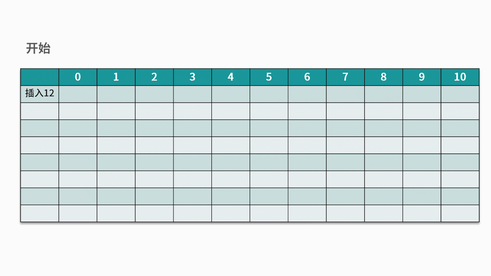
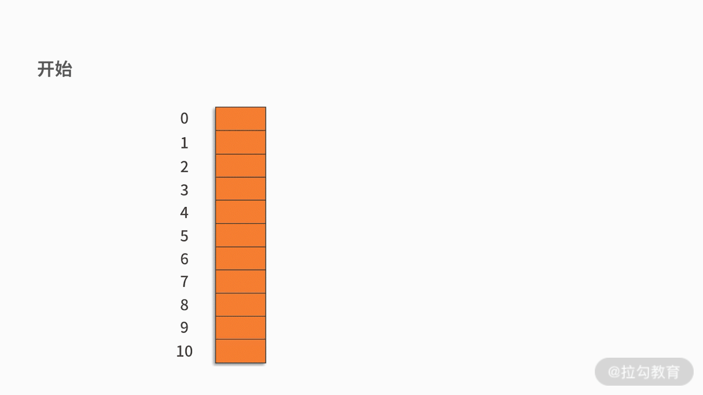
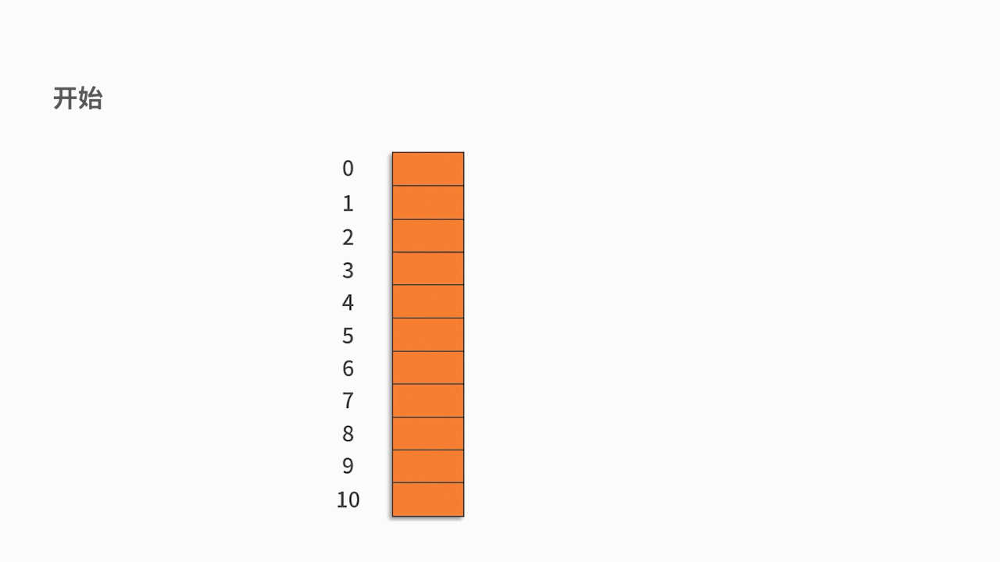
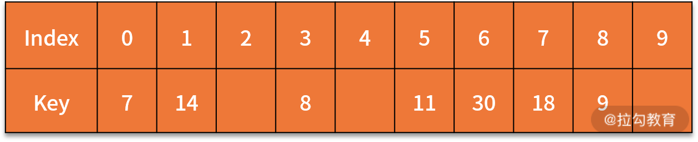

- 00 数据结构与算法，应该这样学！.md.html
- 01 复杂度：如何衡量程序运行的效率？.md.html
- 02 数据结构：将“昂贵”的时间复杂度转换成“廉价”的空间复杂度.md.html
- 03 增删查：掌握数据处理的基本操作,以不变应万变.md.html
- 04 如何完成线性表结构下的增删查？.md.html
- 05 栈：后进先出的线性表，如何实现增删查？.md.html
- 06 队列：先进先出的线性表，如何实现增删查？.md.html
- 07 数组：如何实现基于索引的查找？.md.html
- 08 字符串：如何正确回答面试中高频考察的字符串匹配算法？.md.html
- 09 树和二叉树：分支关系与层次结构下，如何有效实现增删查？.md.html
- 10 哈希表：如何利用好高效率查找的“利器”？.md.html
- 11 递归：如何利用递归求解汉诺塔问题？.md.html
- 12 分治：如何利用分治法完成数据查找？.md.html
- 13 排序：经典排序算法原理解析与优劣对比.md.html
- 14 动态规划：如何通过最优子结构，完成复杂问题求解？.md.html
- 15 定位问题才能更好地解决问题：开发前的复杂度分析与技术选型.md.html
- 16 真题案例（一）：算法思维训练.md.html
- 17 真题案例（二）：数据结构训练.md.html
- 18 真题案例（三）：力扣真题训练.md.html
- 19 真题案例（四）：大厂真题实战演练.md.html
- 20 代码之外，技术面试中你应该具备哪些软素质？.md.html
- 21 面试中如何建立全局观，快速完成优质的手写代码？.md.html
- 加餐 课后练习题详解.md.html
10 哈希表：如何利用好高效率查找的“利器”？
在前面课时中，我们先后学习了线性表、数组、字符串和树，并着重分析了它们对于数据的增删查操作。
对于数据处理它们彼此之间各有千秋，例如：
- 线性表中的栈和队列对增删有严格要求，它们会更关注数据的顺序。
- 数组和字符串需要保持数据类型的统一，并且在基于索引的查找上会更有优势。
- 树的优势则体现在数据的层次结构上。
但它们普遍都存在这样的缺陷，那就是数据数值条件的查找，都需要对全部数据或者部分数据进行遍历。那么，有没有一种方法可以省去数据比较的过程，从而进一步提升数值条件查找的效率呢？答案当然是：有。这一课时我们就来介绍这样一种高效率的查找神器，哈希表。
什么是哈希表
哈希表名字源于 Hash，也可以叫作散列表。哈希表是一种特殊的数据结构，它与数组、链表以及树等我们之前学过的数据结构相比，有很明显的区别。
哈希表的核心思想
在我们之前学过的数据结构里，数据的存储位置和数据的具体数值之间不存在任何关系。因此，在面对查找问题时，这些数据结构必须采取逐一比较的方法去实现。
而哈希表的设计采用了函数映射的思想，将记录的存储位置与记录的关键字关联起来。这样的设计方式，能够快速定位到想要查找的记录，而且不需要与表中存在的记录的关键字比较后再来进行查找。
我们回顾一下数组的查找操作。数组是通过数据的索引（index）来取出数值的，例如要找出 a 数组中，索引值为 1 的元素。在前面的课时中，我们讲到索引值是数据存储的位置，因此，直接通过 a[1] 就可以取出这个数据。通过这样的方式，数组实现了“地址 = f (index)”的映射关系。
如果用哈希表的逻辑来理解的话，这里的 f () 就是一个哈希函数。它完成了索引值到实际地址的映射，这就让数组可以快速完成基于索引值的查找。然而，数组的局限性在于，它只能基于数据的索引去查找，而不能基于数据的数值去查找。
如果有一种方法，可以实现“地址 = f (关键字)”的映射关系，那么就可以快速完成基于数据的数值的查找了。这就是哈希表的核心思想。 下面我们通过一个例子来体会一下。
假如，我们要对一个手机通讯录进行存储，并要根据姓名找出一个人的手机号码，如下所示：
张一：155555555
张二：166666666
张三：177777777
张四：188888888
一个可行的方法是，定义包含姓名、手机号码的结构体，再通过链表把 4 个联系人的信息存起来。当要判断“张四”是否在链表中，或者想要查找到张四的手机号码时，就需要从链表的头结点开始遍历。依次将每个结点中的姓名字段，同“张四”进行比较。直到查找成功或者全部遍历一次为止。显然，这种做法的时间复杂度为 O(n)。
如果要降低时间复杂度，就需要借助哈希表的思路，构建姓名到地址的映射函数“地址 = f (姓名)”。这样，我们就可以通过这个函数直接计算出”张四“的存储位置，在 O(1) 时间复杂度内就可以完成数据的查找。
通过这个例子，不难看出 Hash 函数设计的好坏会直接影响到对哈希表的操作效率。假如对上面的例子采用的 Hash 函数为，姓名的每个字的拼音开头大写字母的 ASCII 码之和。即：
address (张一) = ASCII (Z) + ASCII (Y) = 90 + 89 = 179；
address (张二) = ASCII (Z) + ASCII (E) = 90 + 69 = 159；
address (张三) = ASCII (Z) + ASCII (S) = 90 + 83 = 173；
address (张四) = ASCII (Z) + ASCII (S) = 90 + 83 = 173；
我们发现这个哈希函数存在一个非常致命的问题，那就是 f ( 张三) 和 f (张四) 都是 173。这种现象称作哈希冲突，是需要在设计哈希函数时进行规避的。
从本质上来看，哈希冲突只能尽可能减少，不能完全避免。这是因为，输入数据的关键字是个开放集合。只要输入的数据量够多、分布够广，就完全有可能发生冲突的情况。因此，哈希表需要设计合理的哈希函数，并且对冲突有一套处理机制。
如何设计哈希函数
我们先看一些常用的设计哈希函数的方法：
- 第一，直接定制法
哈希函数为关键字到地址的线性函数。如，H (key) = a*key + b。 这里，a 和 b 是设置好的常数。
- 第二，数字分析法
假设关键字集合中的每个关键字 key 都是由 s 位数字组成（k1,k2,…,Ks），并从中提取分布均匀的若干位组成哈希地址。上面张一、张二、张三、张四的手机号信息存储，就是使用的这种方法。
- 第三，平方取中法
如果关键字的每一位都有某些数字重复出现，并且频率很高，我们就可以先求关键字的平方值，通过平方扩大差异，然后取中间几位作为最终存储地址。
- 第四，折叠法
如果关键字的位数很多，可以将关键字分割为几个等长的部分，取它们的叠加和的值（舍去进位）作为哈希地址。
- 第五，除留余数法
预先设置一个数 p，然后对关键字进行取余运算。即地址为 key mod p。
如何解决哈希冲突
上面这些常用方法都有可能会出现哈希冲突。那么一旦发生冲突，我们该如何解决呢？
常用的方法，有以下两种：
- 第一，开放定址法
即当一个关键字和另一个关键字发生冲突时，使用某种探测技术在哈希表中形成一个探测序列，然后沿着这个探测序列依次查找下去。当碰到一个空的单元时，则插入其中。
常用的探测方法是线性探测法。 比如有一组关键字 {12，13，25，23}，采用的哈希函数为 key mod 11。当插入 12，13，25 时可以直接插入，地址分别为 1、2、3。而当插入 23 时，哈希地址为 23 mod 11 = 1。然而，地址 1 已经被占用，因此沿着地址 1 依次往下探测，直到探测到地址 4，发现为空，则将 23 插入其中。如下图所示：

- 第二，链地址法
将哈希地址相同的记录存储在一张线性链表中。
例如，有一组关键字 {12,13,25,23,38,84,6,91,34}，采用的哈希函数为 key mod 11。如下图所示：

哈希表相对于其他数据结构有很多的优势。它可以提供非常快速的插入-删除-查找操作，无论多少数据，插入和删除值需要接近常量的时间。在查找方面，哈希表的速度比树还要快，基本可以瞬间查找到想要的元素。
哈希表也有一些不足。哈希表中的数据是没有顺序概念的，所以不能以一种固定的方式（比如从小到大）来遍历其中的元素。在数据处理顺序敏感的问题时，选择哈希表并不是个好的处理方法。同时，哈希表中的 key 是不允许重复的，在重复性非常高的数据中，哈希表也不是个好的选择。
哈希表的基本操作
在很多高级语言中，哈希函数、哈希冲突都已经在底层完成了黑盒化处理，是不需要开发者自己设计的。也就是说，哈希表完成了关键字到地址的映射，可以在常数级时间复杂度内通过关键字查找到数据。
至于实现细节，比如用了哪个哈希函数，用了什么冲突处理，甚至某个数据记录的哈希地址是多少，都是不需要开发者关注的。接下来，我们从实际的开发角度，来看一下哈希表对数据的增删查操作。
哈希表中的增加和删除数据操作，不涉及增删后对数据的挪移问题（数组需要考虑），因此处理就可以了。
哈希表查找的细节过程是：对于给定的 key，通过哈希函数计算哈希地址 H (key)。
- 如果哈希地址对应的值为空，则查找不成功。
- 反之，则查找成功。
虽然哈希表查找的细节过程还比较麻烦，但因为一些高级语言的黑盒化处理，开发者并不需要实际去开发底层代码，只要调用相关的函数就可以了。
哈希表的案例
下面我们来讲解两个案例，帮助你进一步理解哈希表的操作过程。
例 1，将关键字序列 {7, 8, 30, 11, 18, 9, 14} 存储到哈希表中。哈希函数为： H (key) = (key * 3) % 7，处理冲突采用线性探测法。
接下来，我们分析一下建立哈希表和查找关键字的细节过程。
首先，我们尝试建立哈希表，求出这个哈希地址：
H (7) = (7 * 3) % 7 = 0
H (8) = (8 * 3) % 7 = 3
H (30) = 6
H (11) = 5
H (18) = 5
H (9) = 6
H (14) = 0
按关键字序列顺序依次向哈希表中填入，发生冲突后按照“线性探测”探测到第一个空位置填入。

最终的插入结果如下表所示：

接着，有了这个表之后，我们再来看一下查找的流程：
- 查找 7。输入 7，计算得到 H (7) = 0，根据哈希表，在 0 的位置，得到结果为 7，跟待匹配的关键字一样，则完成查找。
- 查找 18。输入 18，计算得到 H (18) = 5，根据哈希表，在 5 的位置，得到结果为 11，跟待匹配的关键字不一样（11 不等于 18）。因此，往后挪移一位，在 6 的位置，得到结果为 30，跟待匹配的关键字不一样（11 不等于 30）。因此，继续往后挪移一位，在 7 的位置，得到结果为 18，跟待匹配的关键字一样，完成查找。
例 2，假设有一个在线系统，可以实时接收用户提交的字符串型关键字，并实时返回给用户累积至今这个关键字被提交的次数。
例如，用户输入"abc"，系统返回 1。用户再输入"jk"，系统返回 1。用户再输入"xyz"，系统返回 1。用户再输入"abc"，系统返回 2。用户再输入"abc"，系统返回 3。
一种解决方法是，用一个数组保存用户提交过的所有关键字。当接收到一个新的关键字后，插入到数组中，并且统计这个关键字出现的次数。
根据数组的知识可以计算出，插入到最后的动作，时间复杂度是 O(1)。但统计出现次数必须要全部数据遍历一遍，时间复杂度是 O(n)。随着数据越来越多，这个在线系统的处理时间将会越来越长。显然，这不是一个好的方法。
如果采用哈希表，则可以利用哈希表新增、查找的常数级时间复杂度，在 O(1) 时间复杂度内完成响应。预先定义好哈希表后（可以采用 Map < String, Integer > d = new HashMap <> (); ）对于关键字（用变量 key_str 保存），判断 d 中是否存在 key_str 的记录。
- 如果存在，则把它对应的value（用来记录出现的频次）加 1；
- 如果不存在，则把它添加到 d 中，对应的 value 赋值为 1。最后，打印处 key_str 对应的 value，即累积出现的频次。
代码如下：
if (d.containsKey(key_str) {
d.put(key_str, d.get(key_str) + 1);
}
else{
d.put(key_str, 1);
}
System.out.println(d.get(key_str));
总结
哈希表在我们平时的数据处理操作中有着很多独特的优点，不论哈希表中有多少数据，查找、插入、删除只需要接近常量的时间，即 O(1）的时间级。
实际上，这只需要几条机器指令。哈希表运算得非常快，在计算机程序中，如果需要在一秒钟内查找上千条记录通常使用哈希表（例如拼写检查器)，哈希表的速度明显比树快，树的操作通常需要 O(n) 的时间级。哈希表不仅速度快，编程实现也相对容易。如果不需要有序遍历数据，并且可以提前预测数据量的大小。那么哈希表在速度和易用性方面是无与伦比的。
练习题
下面，我们给出一道练习题。这个问题是力扣的经典问题，two sums。给定一个整数数组 arr 和一个目标值 target，请你在该数组中找出加和等于目标值的那两个整数，并返回它们的在数组中下标。
你可以假设，原数组中没有重复元素，而且有且只有一组答案。但是，数组中的元素只能使用一次。例如，arr = [1, 2, 3, 4, 5, 6]，target = 4。因为，arr[0] + arr[2] = 1 + 3 = 4 = target，则输出 0，2。
这道题目你可以采用暴力解法来完成，也可以使用哈希表提高效率。详细分析和答案，请翻阅 15 课时 例题 1。